Your dial is a bookmarks folder
Pick any bookmarks folder. Its sites become tiles and its subfolders become tabs. Nothing new to sync: it goes wherever your bookmarks already do.
Openmarks turns a bookmarks folder into a speed dial: big tiles, with subfolders as tabs. Free and open source.
Pick any bookmarks folder. Its sites become tiles and its subfolders become tabs. Nothing new to sync: it goes wherever your bookmarks already do.
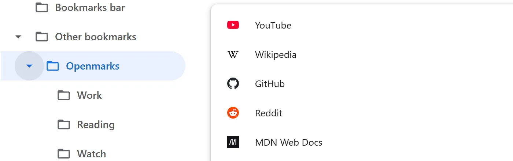
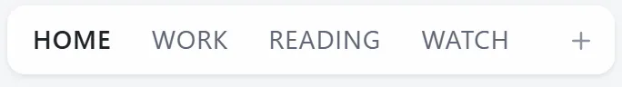
Five sizes, shown here at their real scale. Leave the columns on Auto, or pick any number from 2 to 10.
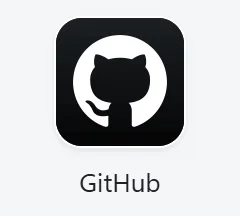

Show the site's cover image, its logo, a screenshot, or a picture of your own. Set it for every tile, or change one.
Titles under each tile, only when you point at it, or not at all.
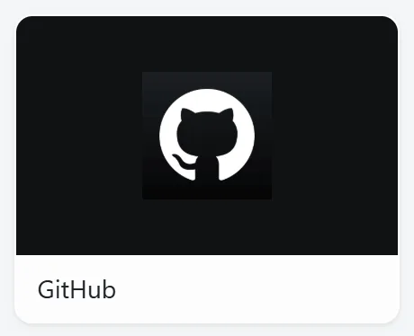
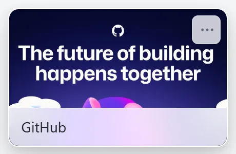
Export any theme as a CSS file, change what you like, and load it back.
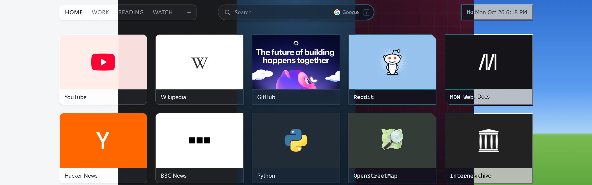
A colour, a gradient, your own photo, or a new picture every day from Wikimedia, Unsplash or Bing.
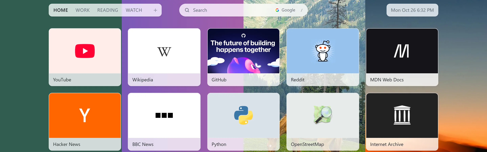
Press / or just start typing. Your tiles and bookmarks come first, then a web search with suggestions.
Google, DuckDuckGo, Startpage, Brave Search, or add your own engine.
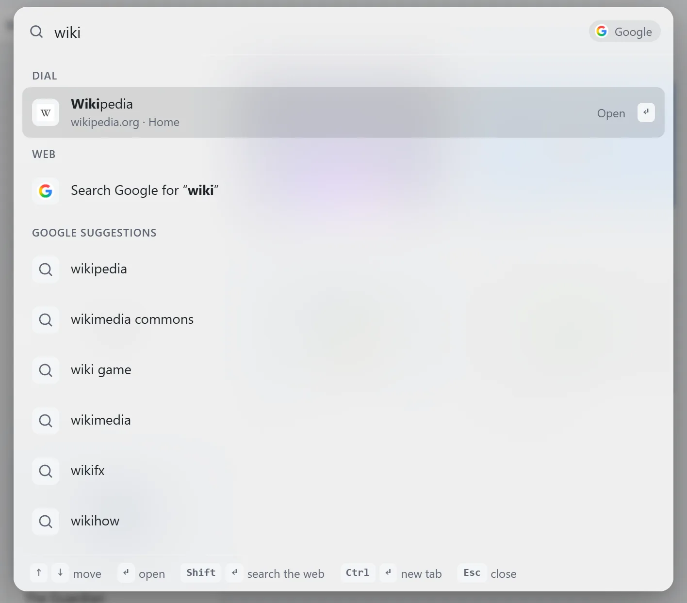
Paste a link onto the page with Ctrl+V. Right-click any website and choose Openmarks › Add to Home. Or add every open tab at once.
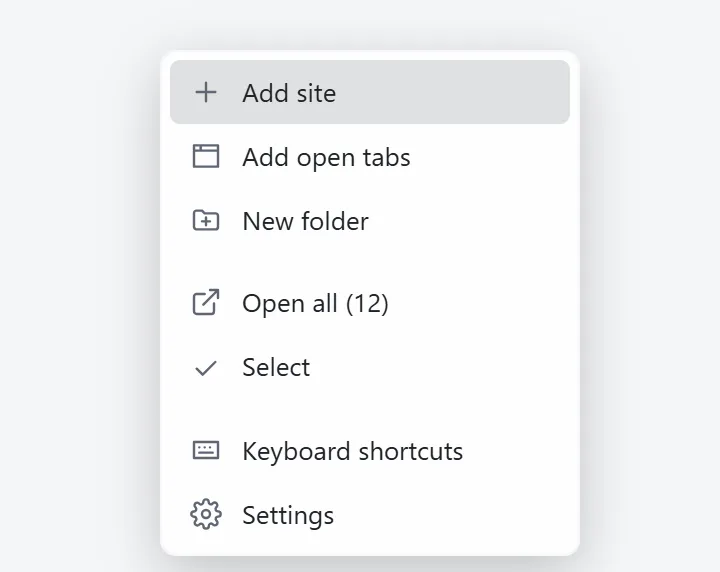
Shift+click tiles to select them, then move, open or delete them together, or drag them into a folder.
Every delete can be undone.
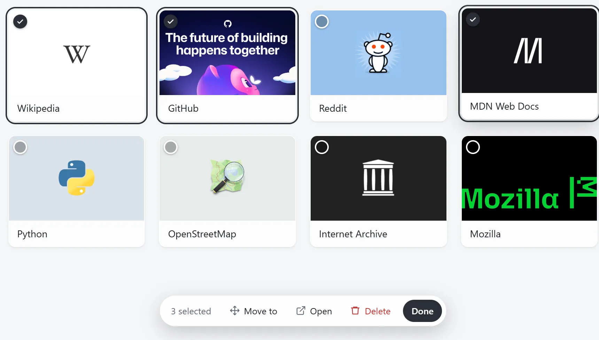
Arrow keys to move, Enter to open, [ and ] to switch folders, ? for the rest.
Yes, there are Vim keys: hjkl, as the ancestors intended. A game controller works too.
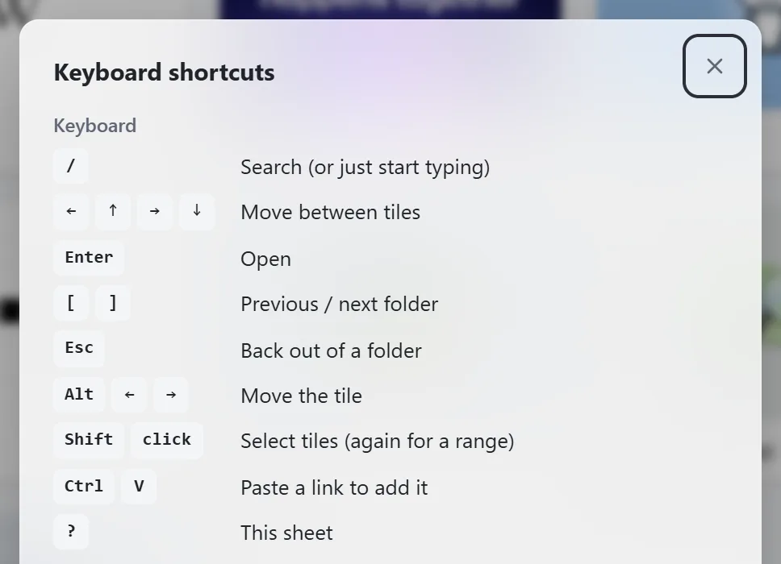
Up to 10 columns on a 49-inch ultrawide, two on a phone, and sharp on HiDPI screens.
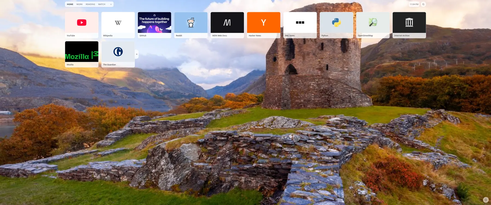
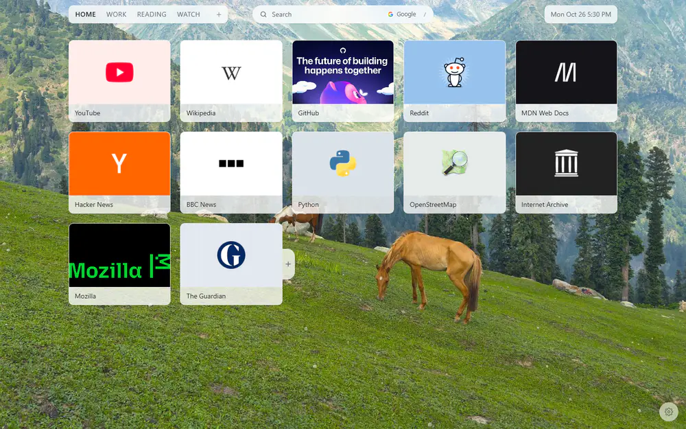
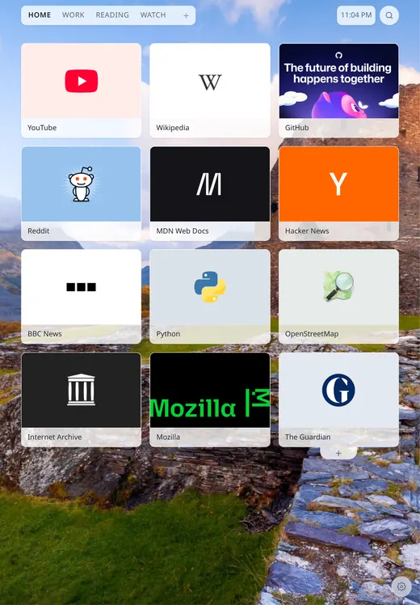
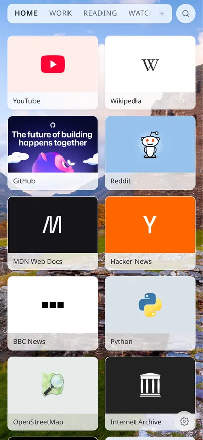
It works in private windows. The only requests it makes are for the wallpaper and tile pictures you turn on. Privacy policy